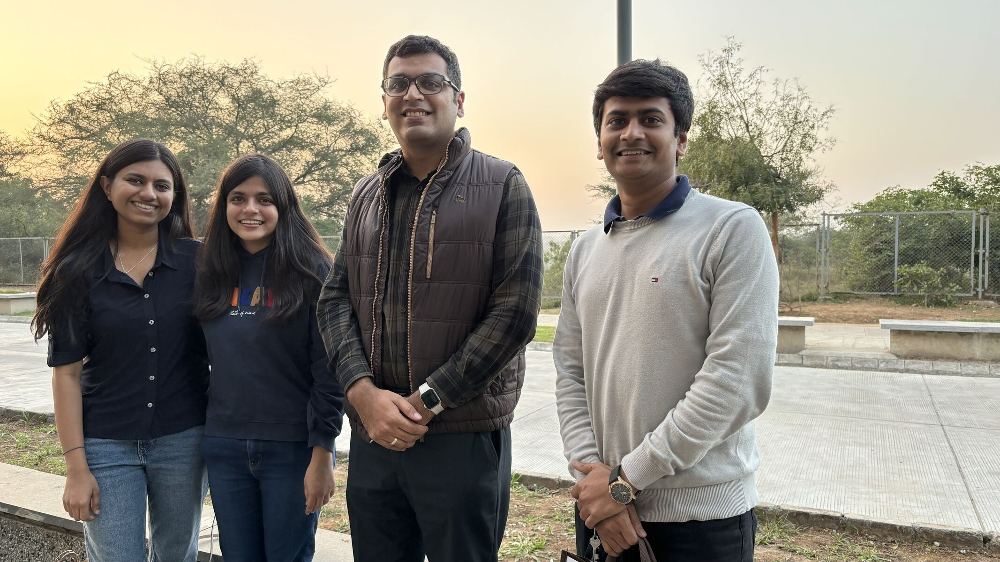

The Growth Mindset: My Journey at the Sustainability Lab
I am Hetvi Shastri. I graduated from IIT Gandhinagar with a BTech in Electrical Engineering and a minor in Computer Science in 2022. I am pursuing a Ph.D. in Computer Science at the University of Massachusetts, Amherst, advised by Prof. Prashant Shenoy.

Visited lab in Jan 2024 with Palak and Harsh
About Me
I worked for around two years at the Sustainability lab. My first work was in the summer of 2021, where I worked on Neural network approaches for non-intrusive load monitoring (NILM). This work was accepted at ACM Buildsys 2021, and I presented virtually at the conference. During my final year, I worked on quantifying uncertainty in NILM, collaborating and mentoring summer interns (Vibhuti, Rohit, and Haikoo). This work was accepted at ACM Buildsys 2022, and I presented it at Boston. Besides this, I was a TA for the Machine Learning course (ES654) taught by Prof. Nipun Batra. I have taken two courses, Operating System and Machine Learning, with Prof. Nipun Batra. Having collaborated with Prof. Nipun Batra for almost three years, Sustainability Lab feels like a second home. So I have summed up a few learnings from my time at the lab which are even helping me during my graduate studies.
Try to find opportunities inside your terrain first before searching outside.
I used to believe that to get a good admission from a reputed university in the US, it is necessary to do a foreign research internship. I got a low rank in the entire electrical batch, which made it impossible for me to get a research internship through college. Still, I was so firm that I used to mail professors and Ph.D. students in the US and try to find some opportunity. Through this process, I got one reply from a Ph.D. student at CMU explaining to me that I should focus on doing good work rather than finding an internship at a good place. After reading this, I joined the Sustainability lab for my summer internship with Prof. Nipun Batra. I first encountered Prof. Nipun Batra during an Operating System course in the fall of 2021. After this, I took a machine learning course in the spring of 2021. His teaching style is very intuitive, which sparked my interest in machine learning. My summer internship work got me a paper at an international conference, and due to this, I received my Ph.D. admission at UMass Amherst. Through this experience, I learned that rather than running behind the tags, if you work hard at what you like, it pays off well.
You get ample opportunities if you want to work.
My entire summer 2021 internship was online. This was the first time an online internship was organized, and initially, we faced a lot of difficulties, but things got better with the process as we kept on discussing ideas. During my internship, I was never treated as a junior. Even as an Electrical Engineering student, Prof. Nipun Batra consistently showed confidence in me, assigning me an independent project. My ideas were valued equally, and I was treated on par with Ph.D. students. He involved me in industry meetings, providing insights beyond academia. In my last year, Prof. Batra gave me the opportunity to be a Teaching Assistant and my first academic talk for the Machine Learning course. This experience significantly boosted my confidence. I even got an opportunity to guide interns in Summer 2022. With a collective effort, we submitted a full paper at Buildsys 2022, marking a successful collaboration. Most of my academic “first times”, like my first paper, first talk, and first research talk, have happened at the lab only because Nipun Sir has always shown great confidence in me, which motivated me to work. You will always get an opportunity at the Sustainability lab if you try to put some effort into learning.
Small things will impact a lot in the long term.
During the paper submission process, it is pretty easy and fast to improve the writing without actually pointing out the mistakes in the student’s writing, but at the lab, I always got advice on what to improve and how it needed to be done. During my presentation at international conferences, Prof Nipun Batra helped me create and improve my presentation skills. I presented and recorded my presentation plenty of times, and he has patiently tried to improve my minute mistakes. We ultimately got positive reviews at the conference. During this experience, I learned that it would first seem a lot to do, but if you go with the flow, even small things impact on a large scale.
Collaborative learning always helps.
During my internship and project courses, we had lab meetings. Lab meetings used to be great, where people working on different projects learn about each other’s work. Through this process, even without actually working on the projects, you will tend to get insights and challenges about the project, which can be helpful to you in the future. During the lab meetings, everyone was involved and tried to provide ideas or feedback for someone else’s work. Knowing so many projects and getting a broad picture of the ongoing research areas was great.
Rather than results, try to create meaningful relations.
My paper and admissions were small wins compared to what I have gained from my entire journey at the Sustainability Lab. By working with Prof. Nipun Batra for almost three years, rather than being a professional mentor, he has been my constant guide in all terms, from my health to my Ph.D. failures. Nipun Sir never fails to message me during my hard times in the US. I am grateful to have him as my lifelong mentor. Besides Prof. Nipun Batra, I have been fortunate enough to work and learn from some fantastic people in the lab: Zeel, Rishiraj, Dhruvi, Palak, Harsh, Shivam, Chris, Vibhuti, Haikoo, Rohit, Aadesh and Karm. I can always rely on them for guidance and support.